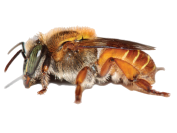
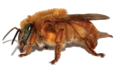
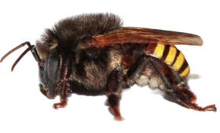
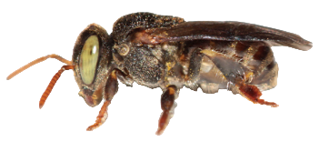
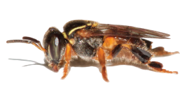
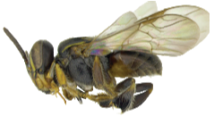
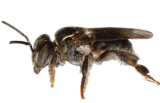
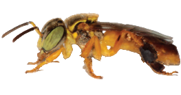

Projeto Abelhas da Mata
Conservação de abelhas nativas e promoção da meliponicultura em Ribeirão Pires
Sobre o Projeto
O Projeto Abelhas da Mata, uma iniciativa da Prefeitura de Ribeirão Pires, representa um passo importante na conservação das abelhas nativas e na promoção da meliponicultura no município. O projeto tem como principais objetivos:
- Conservar abelhas nativas sem ferrão
- Promover a meliponicultura no município
- Conscientizar sobre a importância ecológica das abelhas
Abelhas do Circuito
|
Nome Popular |
Nome Científico |
Características |
|  |
Manduri |
Melipona marginata |
Produz bastante mel apesar do tamanho pequeno, nidifica em pequenos troncos e até construções humanas, ligeiramente defensivas. |
|  |
Mirim Emerina |
Plebeia emerina |
Ótima polinizadora, produz pouco mel, constrói favos horizontais. |
|  |
Jataí |
Tetragonisca angustula |
Corpo amarelo e olhos verdes, comum em todo o país, não ameaça humanos, nidifica em árvores. |
|  |
Mandaçaia |
Melipona quadrifasciata |
Dócil e produtora de mel, marca ninhos com barro em forma de raios. |
|  |
Mirim-Guaçú |
Plebeia remota |
Dócil, vista polinizando jardins urbanos, ninhos em árvores ou locais rochosos. |
|  |
Mirim-Droryana |
Plebeia droryana |
Dócil, cria ninhos em ocos de árvores ou rochas, entrada em formato de lábio. |
|  |
Bugia |
Melipona mondury |
Alta produção de mel, habita a Mata Atlântica. |
|  |
Iraí |
Nannotrigona testaceicomes |
Dóceis e amigáveis, criam ninhos em ocos de árvores, pedras e cercas. |
Produz bastante mel apesar do tamanho pequeno, nidifica em pequenos troncos e até construções humanas, ligeiramente defensivas.
Ótima polinizadora, produz pouco mel, constrói favos horizontais.
Corpo amarelo e olhos verdes, comum em todo o país, não ameaça humanos, nidifica em árvores.
Dócil e produtora de mel, marca ninhos com barro em forma de raios.
Dócil, vista polinizando jardins urbanos, ninhos em árvores ou locais rochosos.
Dócil, cria ninhos em ocos de árvores ou rochas, entrada em formato de lábio.
Alta produção de mel, habita a Mata Atlântica.
Dóceis e amigáveis, criam ninhos em ocos de árvores, pedras e cercas.
Compromisso com a Sustentabilidade
A Prefeitura de Ribeirão Pires e a Secretaria de Meio Ambiente e Bem Estar Animal demonstra seu compromisso com a sustentabilidade através de diversas ações ambientais, incluindo o "Circuito das Abelhas". Nossos esforços incluem:
- Projeto "Abelhas da Mata" pela Secretaria de Meio Ambiente
- Alinhamento com os ODS da Agenda 2030 da ONU
- Incentivo à participação da comunidade em iniciativas sustentáveis
Importância da Preservação das Abelhas
As abelhas são polinizadores vitais, desempenhando um papel crucial em nosso ecossistema:
- Reprodução de diversas espécies de plantas
- Contribuição para a produção de alimentos
- Manutenção da biodiversidade
- Equilíbrio dos ecossistemas
A preservação das abelhas é essencial para a saúde do planeta e o bem-estar humano.
.jpg)